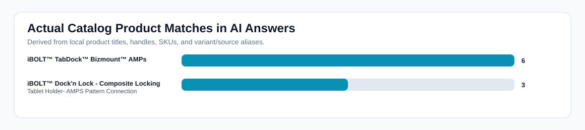
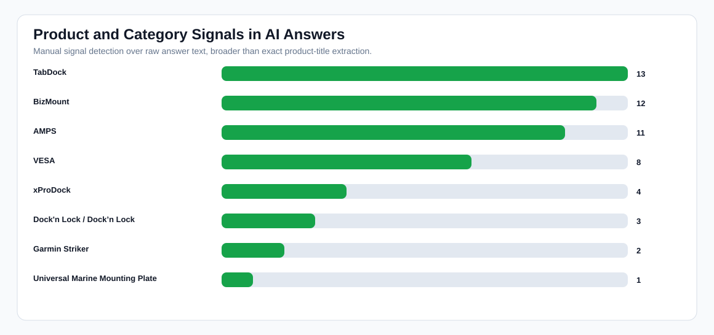
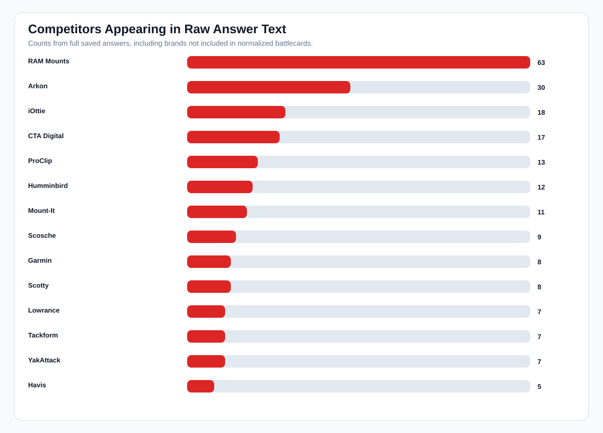
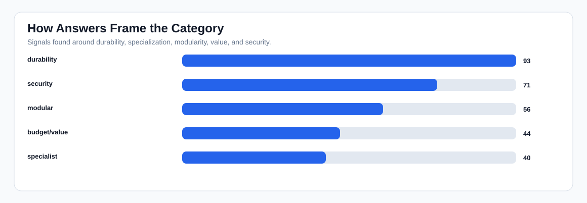

iBOLT AI Answer Evidence Pack
What changed: this report uses the actual saved AI answer text. It can show how iBOLT is mentioned, which competitors appear in the same answer, which product names/families appear, and whether citations/source URLs were present.
Raw answers
93/93
full answer text available
iBOLT mentions
22/93
24% overall
Non-branded mentions
4/75
5% generic prompts
Domain citations
0/93
0% target citation rate
Product signal rows
30/93
manual family/name detection
Catalog product rows
8/93
actual product title/alias detection
Exact stored products
0/93
strict product-title extraction
Competitor-only rows
68
competitor named, iBOLT absent
Co-mention rows
18
iBOLT plus competitor
Charts




iBOLT Mention Excerpts
| Provider | Query | Score | Product signals | Catalog products | Excerpt |
|---|---|---|---|---|---|
| ChatGPT | ibolt phone mounts for DoorDash and Uber Eats drivers | 60 | xProDock, TabDock, BizMount, AMPS | iBOLT™ TabDock™ Bizmount™ AMPs | en selecting a phone mount for DoorDash and Uber Eats drivers, it's important to consider factors such as ease of installation, durability, adjustability, and how well it holds the phone securely during frequent stops and starts. iBOLT offers several phone mounts that cater to these needs. Here are the top recommendations: 1. **iBOLT xProDock Connect Kit** - **Why it's recommended**: The xProDock Connect Kit is highly versatile and designed for heavy-duty |
| Claude | ibolt phone mounts for DoorDash and Uber Eats drivers | 70 | TabDock, BizMount | # iBolt Phone Mounts for DoorDash/Uber Eats Drivers Based on commercial delivery driver needs, here are the top iBolt mount recommendations: ## **Top Recommendations (Ranked)** ### 1. **iBolt TabDock Bizmount** - **Why it's #1**: Pur | |
| Gemini | ibolt phone mounts for DoorDash and Uber Eats drivers | 45 | TabDock, BizMount, AMPS | iBOLT™ TabDock™ Bizmount™ AMPs | For DoorDash and Uber Eats drivers, a reliable phone mount is crucial for navigation, order management, and communication. iBOLT offers a range of mounts that can be excellent choices, but the "best" one depends on your specific vehicle, preferences, and how you prioritize certain features. Here's a breakdown of iBOLT phone mounts, ranked from strongest o |
| ChatGPT | iBolt vs iOttie for delivery driving | 45 | xProDock, AMPS | When comparing iBolt and iOttie for delivery driving, it's important to consider factors such as durability, ease of use, installation style, and specific features that cater to the needs of delivery drivers. Both brands offer a range of phone mounts | |
| Claude | iBolt vs iOttie for delivery driving | 53 | TabDock, BizMount | ction cup to windshield or adhesive dashboard pad **Durability:** Excellent - telescopic arm and quality materials handle daily use **Tradeoffs:** Slightly more expensive (~$25-35), suction cup may need occasional cleaning ## 2. iBolt TabDock Bizmount **Why it ranks #2:** Superior stability but requires permanent installation. **Commercial Use Strengths:** - Rock-solid mounting system designed for commercial vehicles - No suction cups to fail during temperatu | |
| Gemini | iBolt vs iOttie for delivery driving | 35 | xProDock, TabDock | For delivery driving, both iBolt and iOttie offer excellent phone mounts, but they cater to slightly different priorities. Given the demanding nature of delivery work, **durability, secure hold, ease of use, and installation flexibility** are paramount. Here's | |
| ChatGPT | best forklift tablet mount | 53 | TabDock, BizMount, AMPS | iBOLT™ TabDock™ Bizmount™ AMPs | nted on flat surfaces or poles, offering flexibility in installation. - **Tradeoffs**: The longer arm can be a potential obstruction in tight spaces, and installation might require more effort compared to simpler mounts. 3. **iBOLT TabDock Bizmount AMPS** - **Why It's Ranked Third**: This mount is designed for enterprise environments, offering a secure and adjustable mounting solution. - **Commercial Use Cases**: Suitable for businesses that require |
| ChatGPT | best tablet mount for warehouse | 37 | TabDock, BizMount, AMPS | iBOLT™ TabDock™ Bizmount™ AMPs | modular arm system that can be adjusted for different viewing angles and positions. - **Tradeoffs**: The modular system might require more initial setup time, and the cost can be higher due to its premium build quality. 5. **iBOLT TabDock BizMount AMPS** - **Durability**: Designed for commercial use, this mount is made with durable plastic and metal components. - **Installation Style**: The AMPS pattern base allows for secure mounting on flat surfa |
| ChatGPT | iBolt Dock’n Lock for restaurant counters | 60 | Dock'n Lock / Dock’n Lock | iBOLT™ Dock'n Lock - Composite Locking Tablet Holder- AMPS Pattern Connection | The iBolt Dock’n Lock is a versatile mounting solution designed to secure tablets and other devices in commercial settings like restaurants. When evaluating this product for use on restaurant counters, it's important to consider factors su |
| Claude | iBolt Dock’n Lock for restaurant counters | 70 | Dock'n Lock / Dock’n Lock, xProDock, TabDock | iBOLT™ Dock'n Lock - Composite Locking Tablet Holder- AMPS Pattern Connection | # iBolt Dock'n Lock for Restaurant Counters The iBolt Dock'n Lock system is a modular mounting solution designed for secure tablet/device mounting in commercial environments. Here are the top options ranked for restaurant counter use: |
| Gemini | iBolt Dock’n Lock for restaurant counters | 60 | Dock'n Lock / Dock’n Lock, TabDock, BizMount, AMPS | iBOLT™ Dock'n Lock - Composite Locking Tablet Holder- AMPS Pattern Connection, iBOLT™ TabDock™ Bizmount™ AMPs | The iBolt Dock’n Lock is a popular choice for securing tablets in commercial settings, and it's particularly well-suited for restaurant counters due to its robust design and security features. Let's break down its suitability, specific use |
| ChatGPT | ibolt vs ram mount | 45 | TabDock, BizMount | When comparing iBolt and RAM Mount products, it's important to consider the specific use cases, durability, installation styles, and any trade-offs that might affect your decision. Both brands offer a range of mounting solutions, but they cater to sl | |
| Claude | ibolt vs ram mount | 45 | TabDock, BizMount | # iBOLT vs RAM Mount: Comprehensive Comparison Both iBOLT and RAM Mount are leading manufacturers of device mounting solutions, but they serve different market segments with distinct strengths. ## Top Recommendations (Ranked) ### 1. * | |
| Gemini | ibolt vs ram mount | 45 | You're looking to choose between iBOLT and RAM Mounts for your mounting needs, and that's a great question! Both are well-respected brands, but they cater to slightly different use cases and have distinct strengths. **The Short Answer (TL;DR):** * **RAM Mounts:** |
Competitor-Only Excerpts
| Provider | Query | Topic | Competitors | Example context |
|---|---|---|---|---|
| ChatGPT | best phone mount for Amazon Flex and delivery vans | delivery | RAM Mounts, iOttie, Scosche, Belkin | sed on driver preference. - **Tradeoffs:** The suction cup may lose effectiveness over time, especially in extreme temperatures, but it can be refreshed by rinsing with warm water. 2. **RAM X-Grip Phone Mount with Suction Cup Base** - **Why It's Ranked Here:** Known for its rugged design and strong grip, the RAM X-Grip is perfect for those who need a mount that can withstan |
| Claude | best phone mount for Amazon Flex and delivery vans | delivery | RAM Mounts, Arkon, iOttie | # Best Phone Mounts for Amazon Flex and Delivery Vans Based on the demanding requirements of delivery work, here are the top phone mount options ranked by performance: ## 1. **RAM Mounts X-Grip Phone Mount with Suction Cup Base** **Why it's #1:** Industry standard for commercial vehicle use - **Durability:** Military-grade construction, tested to withstand extreme vibration |
| Gemini | best phone mount for Amazon Flex and delivery vans | delivery | RAM Mounts, ProClip | Mount Recommendations for Amazon Flex and Delivery Vans:** Here are the strongest options, ranked from most robust/versatile to more specialized, with detailed explanations: --- ### **1. RAM Mounts (Various Configurations)** **Why it's #1:** RAM Mounts are the gold standard for heavy-duty, commercial-grade phone mounting. They are incredibly modular, allowing you to build a system pe |
| ChatGPT | best phone mount for delivery drivers | fleet | RAM Mounts, iOttie, Scosche, Belkin | on the dashboard or vent, offering versatile placement options. - **Tradeoffs**: Requires a metal plate to be attached to the phone or case, which some users may find inconvenient. 3. **RAM X-Grip Phone Mount** - **Why it's recommended**: The RAM X-Grip is known for its rugged design and ability to hold phones securely even on rough terrain, making it perfect for delivery d |
| Claude | best phone mount for delivery drivers | fleet | RAM Mounts, iOttie, ProClip | # Best Phone Mounts for Delivery Drivers (2024) Here are the top phone mounts ranked for delivery drivers, considering durability, ease of use, and commercial demands: ## 1. **RAM Mounts X-Grip Series with Suction Cup Base** **Why it's #1:** Built for commercial/professional use with military-grade durability - **Durability:** Rubber construction withstands extreme temperat |
| Gemini | best phone mount for delivery drivers | fleet | RAM Mounts, iOttie | allation Style:** Needs to be secure and not obstruct vision or airbags. * **Commercial Use Cases:** Think about multiple stops, quick exits, and constant interaction. --- ### **Rank 1: RAM Mounts (The Indestructible Workhorse)** **Why it's #1:** RAM Mounts are the gold standard for commercial and heavy-duty applications. They are over-engineered, modular, and virtually indestructib |
| ChatGPT | best ELD mount for trucks | fleet | RAM Mounts, Arkon, ProClip, Scosche | ors such as durability, ease of installation, adjustability, and compatibility with various ELD devices. Here are some top options currently available, ranked based on these criteria: 1. **RAM Mounts RAM-B-166-UN10U X-Grip** - **Why It's Ranked Here**: RAM Mounts is a well-respected brand known for its durable and versatile mounting solutions. The RAM-B-166-UN10U X-Grip is particul |
| Claude | best ELD mount for trucks | fleet | RAM Mounts, Arkon, ProClip | # Best ELD Mounts for Commercial Trucks Here are the top ELD mounting solutions ranked by reliability, durability, and commercial suitability: ## 1. **RAM Mounts X-Grip Series** **Why it's #1:** Industry standard for heavy-duty commercial applications - **Durability:** Marine-grade aluminum construction, vibration-dampening ball joints - **Installat |
| Gemini | best ELD mount for trucks | fleet | RAM Mounts, Arkon | tions, ranked from strongest to good, with detailed explanations for commercial use cases, durability, installation, and tradeoffs: --- ## Top ELD Mount Recommendations for Trucks ### 1. RAM Mounts (Heavy-Duty Series) **Why it's #1:** RAM Mounts are the undisputed king of commercial vehicle mounting solutions. Their modular design, robust construction, and extensive range of componen |
| ChatGPT | magnetic vs clamp phone mounts for delivery work | delivery | RAM Mounts, iOttie, Scosche | n:** Clamp mounts can be larger and more obtrusive. 2. **Slower Operation:** Attaching and detaching the phone can take more time compared to magnetic mounts. **Top Recommendations:** 1. **RAM X-Grip:** Known for its durability and strong grip, the RAM X-Grip is ideal for heavy-duty use. It offers a flexible arm and a secure hold, making it perfect for delivery work. 2. **iOttie |
| Claude | magnetic vs clamp phone mounts for delivery work | delivery | RAM Mounts, iOttie, Belkin, Quad Lock | k, **clamp mounts are generally the better choice** due to superior security and reliability, though magnetic mounts offer convenience advantages. ## Top Recommendations (Ranked) ### 1. **RAM Mounts X-Grip with RAM-B-166-UN7U** (Clamp) - **Why it's #1**: Industry standard for commercial use, virtually indestructible - **Durability**: Military-grade materials, lifetime warranty on some |
| Claude | best forklift tablet mount | warehouse | RAM Mounts, Havis, Zebra | # Best Forklift Tablet Mount Options Based on current market analysis, here are the top forklift tablet mount solutions ranked by overall value and performance: ## 1. **RAM Mounts RAM-VB-196-SW1** **Price Range: $400-500** **Why it's #1:** Industry gold standard with proven 20+ year track record in heavy equipment mounting. - **Commercial Use:** Ideal for warehous |
| Gemini | best forklift tablet mount | warehouse | RAM Mounts, ProClip | pment. Here's a breakdown of the best options, ranked, along with commercial use cases, durability, installation styles, and tradeoffs. --- ## Top Forklift Tablet Mounts (Ranked) ### 1. RAM Mounts (Heavy-Duty Series) **Why it's #1:** RAM Mounts are the undisputed industry standard for rugged mounting solutions, and their heavy-duty forklift options are no exception. They offer unpar |
| ChatGPT | commercial grade phone mount for delivery drivers | delivery | RAM Mounts, Arkon, iOttie, Scosche | ortant to consider factors such as durability, ease of installation, stability, and adaptability to different vehicle types. Here are some top recommendations based on these criteria: 1. **RAM Mounts X-Grip Universal Holder** - **Why It's Recommended**: RAM Mounts are known for their rugged durability and versatility. The X-Grip model is particularly popular due to its spring-loaded |
| Claude | commercial grade phone mount for delivery drivers | delivery | RAM Mounts, Arkon, ProClip | # Commercial Grade Phone Mounts for Delivery Drivers Based on current market analysis, here are the top commercial-grade phone mounts ranked by overall value for delivery drivers: ## 1. **RAM Mounts X-Grip Series with Suction Cup Base** **Why it's #1:** Industry standard for commercial fleets - **Durability:** Military-grade materials, tested to 3G shock/vibration standards - **Install |
| Gemini | commercial grade phone mount for delivery drivers | delivery | RAM Mounts, ProClip | commendations for Commercial-Grade Phone Mounts for Delivery Drivers Here are the strongest options, ranked from most robust/feature-rich to excellent all-around performers. --- ### **1. RAM Mounts (Various Configurations)** **Why it's #1:** RAM Mounts are the gold standard for commercial and industrial applications. Their modular system allows for incredible customization, durabilit |
| ChatGPT | best phone mount for Instacart and grocery delivery drivers | delivery | RAM Mounts, iOttie, Scosche | on the dashboard or vent, providing flexibility in positioning. - **Tradeoffs**: Requires a metal plate to be attached to the phone or case, which some users may find inconvenient. 3. **RAM X-Grip Phone Mount** - **Why it's ranked #3**: Known for its rugged design, the RAM X-Grip is perfect for drivers who need a highly secure mount. It uses a spring-loaded holder that expa |
| Claude | best phone mount for Instacart and grocery delivery drivers | delivery | RAM Mounts, iOttie | rt & Grocery Delivery Drivers Based on the demanding requirements of delivery driving (frequent phone access, navigation visibility, durability), here are the top recommendations: ## 1. **RAM Mounts X-Grip Phone Mount with Suction Cup Base** **Why it's #1:** Industry standard for commercial drivers - **Durability:** Military-grade materials, designed for heavy commercial use - **Instal |
Source URL Audit
| Provider | Query | Source URLs | URLs |
|---|---|---|---|
| No source URLs were extracted for this OpenRouter consumer-model run. | |||
Top Raw Competitors
RAM Mounts 63; Arkon 30; iOttie 18; CTA Digital 17; ProClip 13; Humminbird 12; Mount-It 11; Scosche 9; Garmin 8; Scotty 8
Top Product Signals
TabDock 13; BizMount 12; AMPS 11; VESA 8; xProDock 4; Dock'n Lock / Dock’n Lock 3; Garmin Striker 2; Universal Marine Mounting Plate 1
Top Catalog Product Matches
iBOLT™ TabDock™ Bizmount™ AMPs 6; iBOLT™ Dock'n Lock - Composite Locking Tablet Holder- AMPS Pattern Connection 3